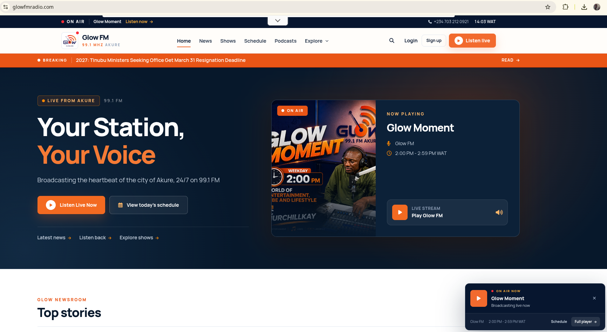
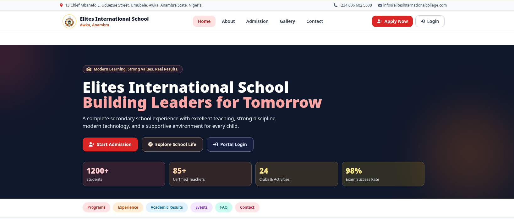
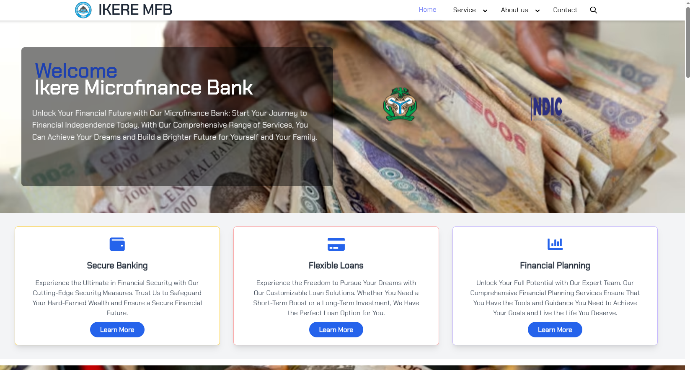
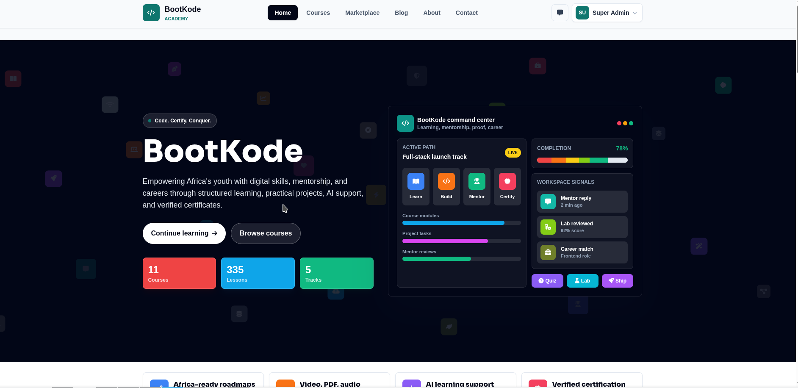

Glow FM 99.1
A broadcasting platform bringing live radio, programmes, presenters, news and audience touchpoints into one digital home.
Read the case study →Selected work
Five projects across media, community health, education, finance and technical learning. Each case study describes delivered functionality without invented performance claims.

A broadcasting platform bringing live radio, programmes, presenters, news and audience touchpoints into one digital home.
Read the case study →
A public information and coordination platform connecting community health outreach with role-aware digital workspaces.
Read the case study →
A school website and management application supporting the institution’s public presence and academic administration.
Read the case study →
A professional web platform presenting the bank’s services and giving customers a clear digital route to information.
Read the case study →
An EdTech product focused on structured, affordable and locally relevant coding education for young Africans.
Read the case study →